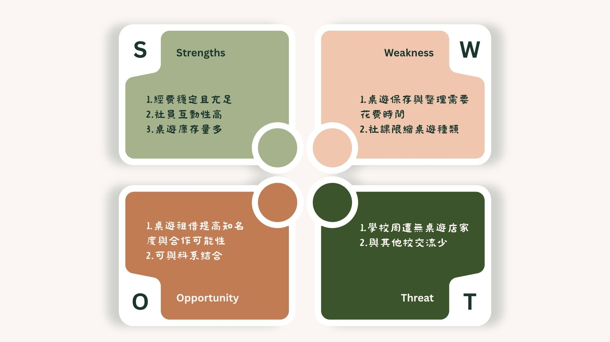

SWOT 分析改善方式
Strengths (優勢)：
• 在社團財產的部分，因社團學分暫時能有穩定的人流和收入，應該利用這個優勢舉辦與其他康樂性社團不同的活動，讓社員找到自己的興趣進而留在社團
• 社員互動性高，但容易僅限對同桌桌員，因此增加能讓社員與其他桌互動的活動
• 桌遊庫藏量達300多款，每學期的經費可以優先運用在辦活動上，減少採買新桌遊的量
Weaknesses (劣勢)：
• 擴大器材組人員將一部分的經費運用在解決社辦潮濕之問題
• 中重度策略桌遊需較長的遊玩時間，為此長期整理並維護社辦的整潔空間，以提供特定的時段讓策略玩家至此開桌
Opportunities (機會)：
• 社團或者系學會可跟我們租借桌遊以辦活動，而我們也藉此宣傳，達成雙贏
• 桌遊內容侷限低，適合結合教育知識與娛樂，可透過這點與科系合作研發新桌遊
Threats (威脅)：
• 因為淡水地理位置相較偏僻導致學校附近沒有桌遊店，也因此在辦理桌遊比賽等活動要租借大量相同的桌遊時難度偏高，為此未來可嘗試尋找能郵寄往來之店家，或者與桌遊廠商合作辦理比賽
• 同上，過往辦理實體交流會社員參與度低，或許可建立虛擬的交流網，並配合線上桌遊平台，實現校際互動